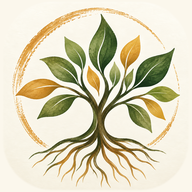

Fulton Community School & Farm
TREE
Traces, Reflection, Evidence, Experience
Educator
Connecting
Settings
Keep an observation

Fulton Community School & Farm
TREE
Traces, Reflection, Evidence, Experience
Your first name
Your passcode
The first time, type your first name and leave the passcode empty. TREE then asks you to choose four numbers.
Forgot your four numbers? Ask Renee to clear them, then sign in with an empty passcode to choose new ones.
Choose four numbers you will remember. Only you and Renee will know them.
New passcode, four numbers
The same four numbers again
Sign in